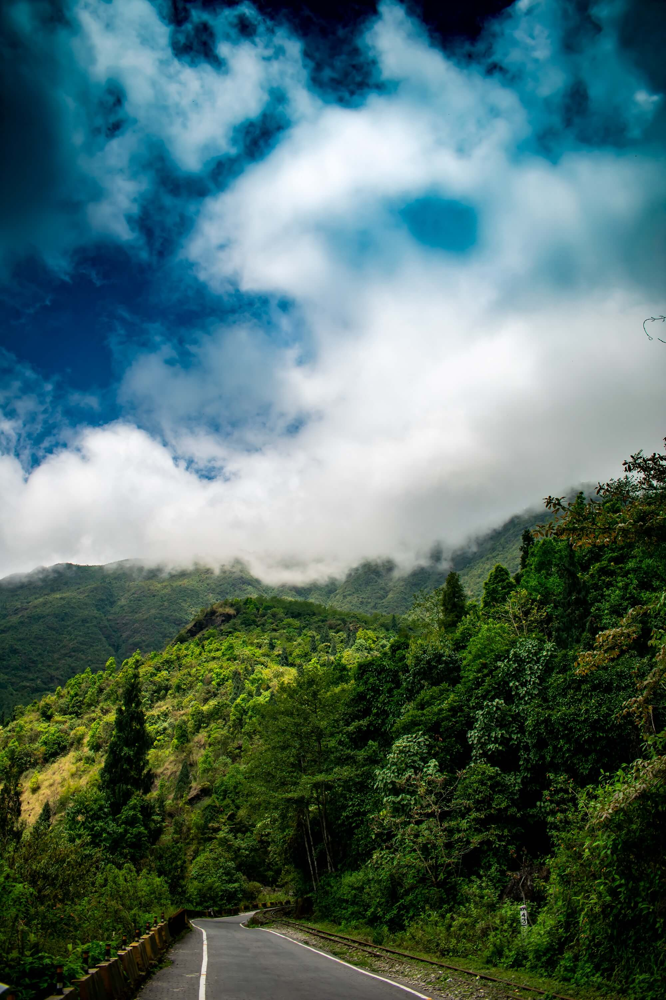

Explore The Beauty Of West Bengal
West Bengal, located on eastern bottleneck of India stretching from the Himalayas in the north to the Bay of Bengal in the south, presents some of marvelous landscape features and natural scenic beauty. Some of India's most preferred travel destinations like; the Darjeeling Himalayan hill region in the northern extreme of the state, the highest peak of the state Sandakphu (3,636 m or 11,929 ft) and the Sundarbans mangrove forests in the extreme south.

Darjeeling
Digha
Enjoy the beauty of sea